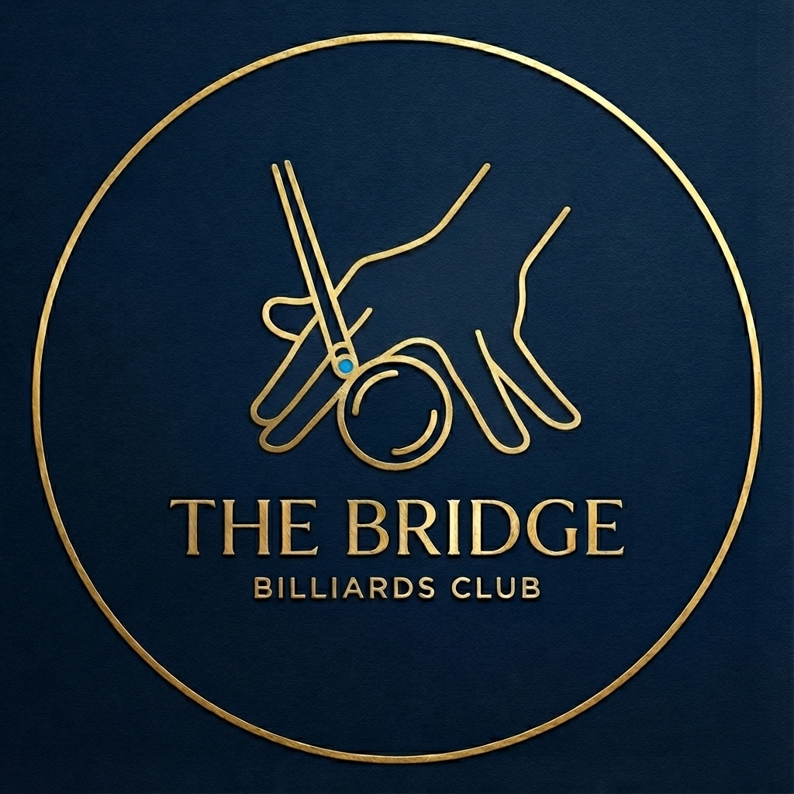
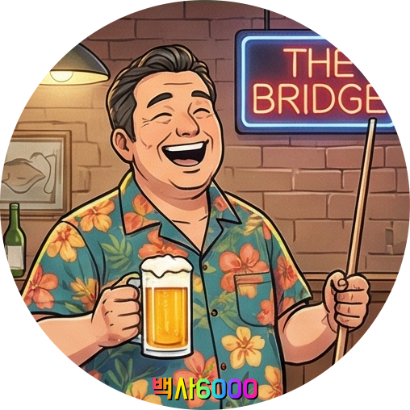
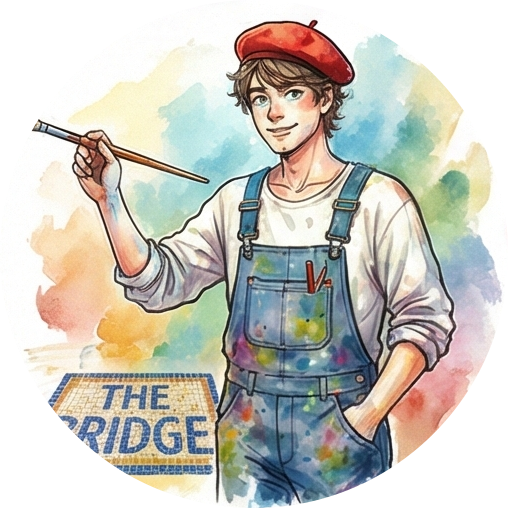
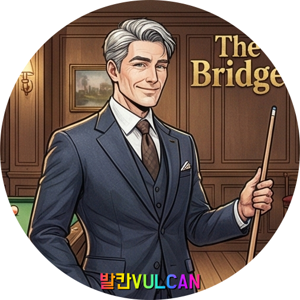
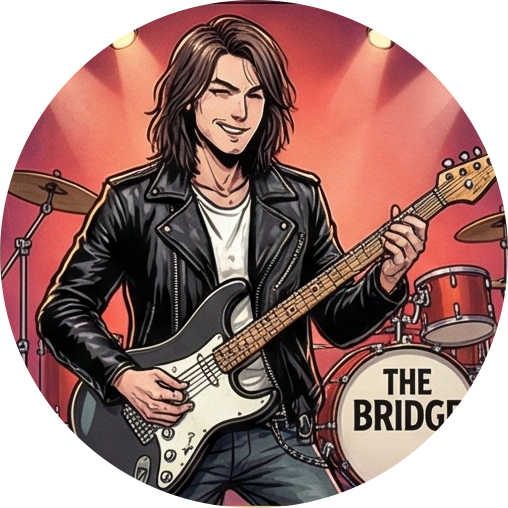
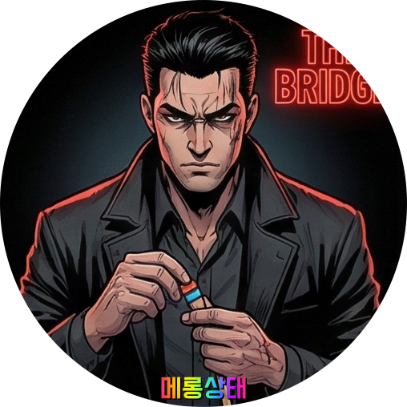
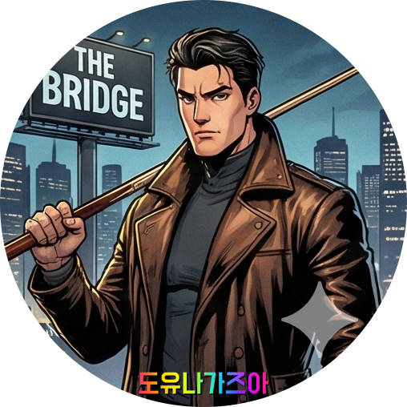
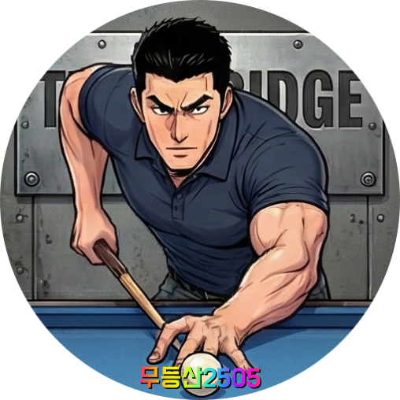

THE BRIDGE
큐와 공을 잇고, 선배와 후배를 잇다.
흔들리지 않는 지지대, 우리는 '더 브릿지'입니다.

white.png

hyun.png
 kbh.png
kbh.png

vulcan.png

jigyo.png
grandeur.png
1329.png
k574.png

maerong.png

doyoon.png
 smg.png
smg.png

2505.png
- 백사6000 / [H25]
- 려리 / [H22]
- kbh / [H23]
- 발칸VULCAN / [H24]
- 지교 / [H30]
- 그렌다이저 / [H25]
- 무등산1329 / [H28]
- 케이574 / [H27]
- 메롱상태 / [H26]
- 도유나가즈아 / [H27]
- SMG / [H32]
- 무등산2505 / [H30]
- 백사6000 / [H25]
- 려리 / [H22]
- kbh / [H23]
- 발칸VULCAN / [H24]
- 지교 / [H30]
- 그렌다이저 / [H25]
- 무등산1329 / [H28]
- 케이574 / [H27]
- 메롱상태 / [H26]
- 도유나가즈아 / [H27]
- SMG / [H32]
- 무등산2505 / [H30]